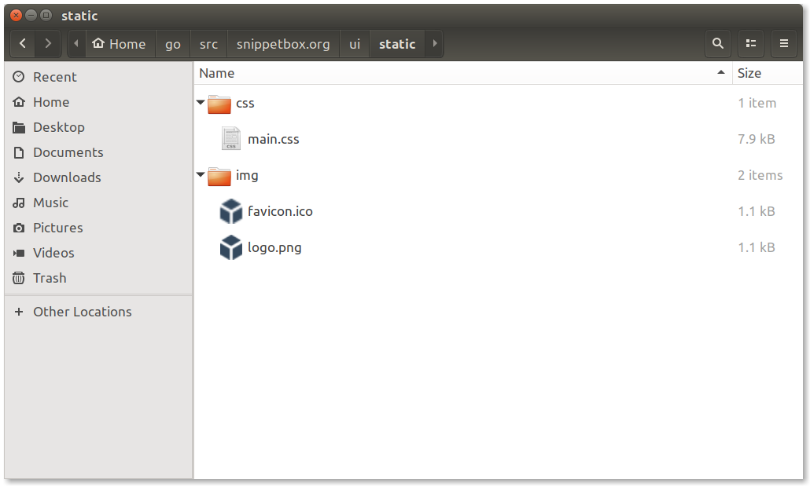
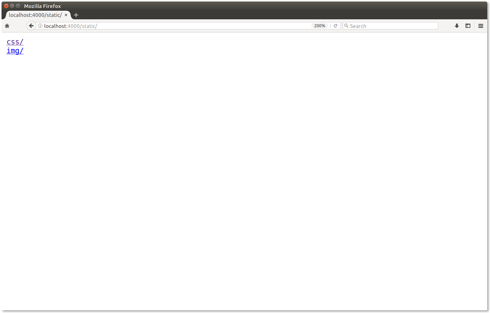
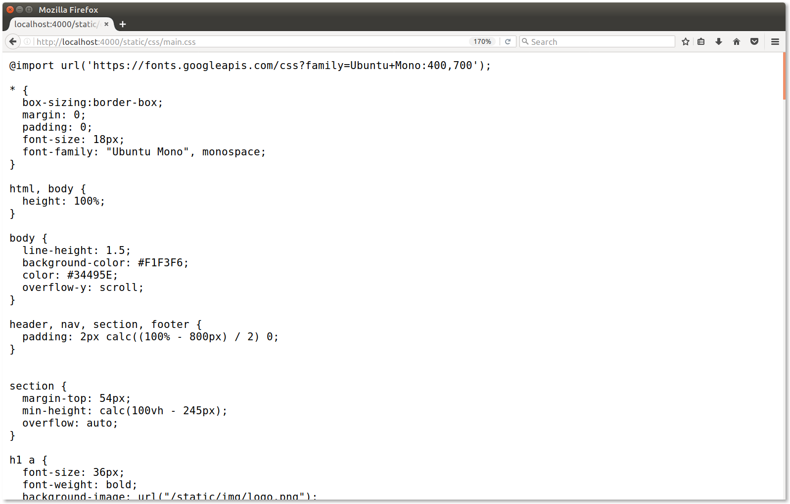
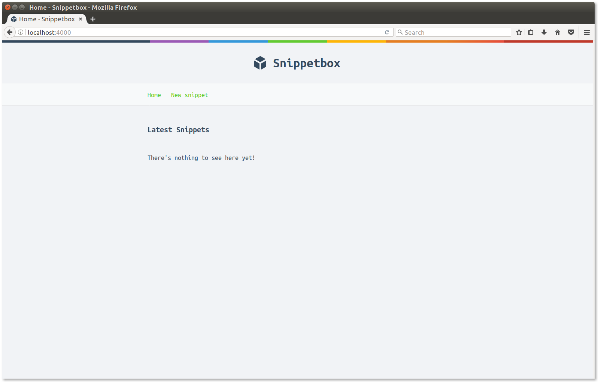

2.8. Serving Static Files
In this chapter we'll improve the look and feel of our homepage by adding to some static CSS and image files to our application.
If you're following along, you can grab the relevant files and extract them into the ui/static folder we made earlier with the following commands:
$ cd $HOME/go/src/snippetbox.org $ curl http://www.alexedwards.net/static/sb.v100.tar.gz | tar -xvz -C ./ui/static/
The contents of your ui/static folder should now look like this:

The http.FileServer Handler
The key to serving these static files from our web application is the http.FileServer() function. This lets us create a http.FileServer handler which serves files from a specific directory, like so:
fileServer := http.FileServer(http.Dir("./ui/static"))
Let’s add a new route so that all requests which begin with "/static/" are handled by the file server (note how "/static/" is a subtree path pattern):
| URL Path | Handler | Action |
|---|---|---|
| / | Home | Display a "Hello from Snippetbox" message |
| /snippet?id=1 | ShowSnippet | Display a specific snippet |
| /snippet/new | NewSnippet | Display the new snippet form |
| /static/... | http.FileServer | Serve a specific static file |
When the http.FileServer handler receives a request, it will remove the leading slash from the URL path and then search the ./ui/static directory for the corresponding file.
So for this to work correctly we have to strip the leading "/static" from the URL path before passing it to http.FileServer, otherwise it will be looking for a file which doesn't exist and the user will receive a 404 Not Found response. Fortunately Go includes a http.StripPrefix() helper specifically for the task.
Open up your main.go file and add the following code, so that the file ends up looking like this:
package main import ( "log" "net/http" ) func main() { mux := http.NewServeMux() mux.HandleFunc("/", Home) mux.HandleFunc("/snippet", ShowSnippet) mux.HandleFunc("/snippet/new", NewSnippet) // Create a file server which serves files out of the "./ui/static" directory. // As before, the path given to the http.Dir function is relative to our project // repository root. fileServer := http.FileServer(http.Dir("./ui/static")) // Use the mux.Handle() function to register the file server as the // handler for all URL paths that start with "/static/". For matching // paths, we strip the "/static" prefix before the request reaches the file // server. mux.Handle("/static/", http.StripPrefix("/static", fileServer)) log.Println("Starting server on :4000") err := http.ListenAndServe(":4000", mux) log.Fatal(err) }
Once that's complete, save the file and restart the application.
Try taking a look at http://localhost:4000/static/ in your browser and you should see a navigable directory listing of the ./ui/static folder, a bit like this:

If you browse through, you should be able to view the individual files. For example, if you navigate to http://localhost:4000/static/css/main.css you should see the CSS file appear in your browser, like so:

Using the Static Files
With that done, we can now update our ui/html/base.html file to make use of these static files:
{{define "base"}}
<!doctype html>
<html lang="en">
<head>
<meta charset="utf-8">
<title>{{template "page-title" .}} - Snippetbox</title>
<!-- Link to the CSS stylesheet and favicon -->
<link rel="stylesheet" href="/static/css/main.css">
<link rel="shortcut icon" href="/static/img/favicon.ico" type="image/x-icon">
</head>
<body>
<header>
<h1><a href="/">Snippetbox</a></h1>
</header>
<nav>
<a href="/">Home</a>
<a href="/snippet/new">New snippet</a>
</nav>
<section>
{{template "page-body" .}}
</section>
</body>
</html>
{{end}}
Make sure you save all your changes then visit http://localhost:4000/. If everything has worked correctly you should see a homepage which looks like this:

Notes
Features and Functions
Go's http.FileServer has a few really nice features that are worthy of a mention:
-
It sanitizes all request paths by running them through the
path.Clean()function before searching for a file. This removes any.and..elements from the URL path, which helps to stop directory traversal attacks. -
Range requests are fully supported. This is great if your application is serving large files and you want to support resumable downloads. You can see this functionality in action if you use curl to request bytes 100-199 of our
logo.pngfile, like so:$ curl -i -H "Range: bytes=100-199" http://localhost:4000/static/img/logo.png HTTP/1.1 206 Partial Content Accept-Ranges: bytes Content-Length: 100 Content-Range: bytes 100-199/1075 Content-Type: image/png Last-Modified: Thu, 04 May 2017 13:07:52 GMT Date: Sat, 19 Aug 2017 09:12:49 GMT h�j��ZbK�&�"b��dS�"V��M�PQ�S�T��x�PMC1���&�.(غ� ����&�"^"� ZI -
The
Last-ModifiedandIf-Modified-Sinceheaders are transparently supported. If a file hasn’t changed since the user last requested it, then Go will send a304 Not Modifiedstatus code instead of the file itself. This helps reduce latency and processing overhead for both the client and server -
The
Content-Typeis automatically set from the file extension using themime.TypeByExtension()function. You can add your own custom extensions and content types using themime.AddExtensionType()function if necessary.
Serving Single Files
Sometimes you might want to serve a single file from within a handler. For this there's the http.ServeFile() function:
func FooHandler(w http.ResponseWriter, r *http.Request) { file := filepath.Join("./ui/static", "foo.zip") http.ServeFile(w, r, file) }
But be aware: http.ServeFile() does not automatically sanitize the file path. If you're constructing a file path from untrusted user input, you must sanitize the input with filepath.Clean() before using it to avoid directory traversal attacks.